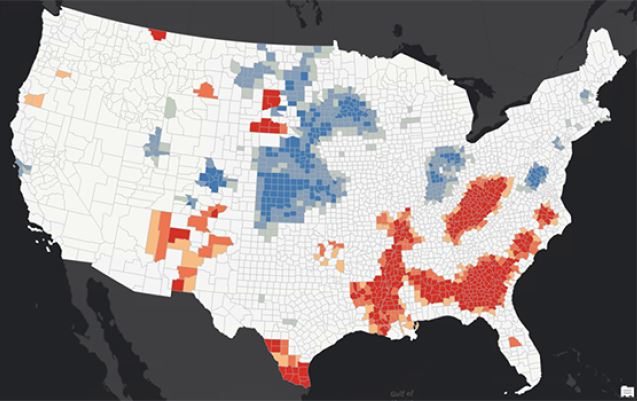

Hot Spot Analysis uses the Getis-Ord Gi* statistic to identify statistically significant spatial clusters of high values (hot spots) and low values (cold spots).
Outlier Analysis uses the Anselin Local Moran's I statistic to identify statiscally significant clusters of high and low values and to detect spatial outliers, or features with values significantly dissimilar from their neighbours.
This project aims to find meaningful patterns of high and low Supplemental Nutrition Assistance Program (SNAP) participation. This information help decision makers distribute resources more efficiently and equitably.
Run a Hot Spot Analysis
Open Optimized Hot Spot Analysis. For Analysis Field use SNAPRate, which is the rate of SNAP participation in each county.
The default distance band of 150km was chosen. In this project this may not be applicable since we are analyzing a more local pattern. We can therefore change the distance band to 75km to detect more local patterns in this county level dataset.
The output is more appropriate for our analysis.
Run an Outlier Analysis
Open the Optimized Outlier Analysis tool. Same input as Hot Spot Analysis. Update distance band to 75km.
The bright red and blue features represent spatial outliers. Features with high values surrounded by areas with low values are called High-Low outliers and are displayed in red. Features with low values surrounded by areas with high values are called Low-High outliers and are displayed in blue. The pink and light blue colours indicate clusters of features with statistically significantly high values (pink) and statistically significantly low values (light blue). These clusters typically align with the hot and cold spots from the Optimized Hot Spot Analysis tool.